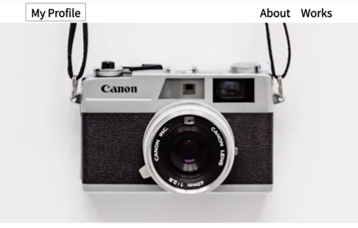
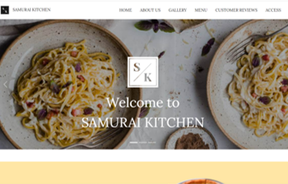
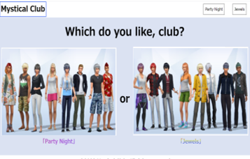

◆概要◆
このページは、和風をテーマにして作成しました。
今までトップにナビがあるパターンばかり制作していたので、
違うパターンを模索したところ、左側にナビをおいてみました。やってみたいことをとにかく詰め込もうと思い作成しました。
やってみたかったこと
- Bootstrapのカルーセルとカードを使う
- 縦書き
- 背景attachmentを使う
- フリー素材を使う
反省点・改善点
- カルーセル以外PowerPointっぽく見える
- 背景を動かさず文字だけが動いてるように見せたかったが、一つの項目が短いせいか画像がシンプルなせいかわかりづらい
- 徳島県出身なので、藍染・阿波踊りを取り入れたらよかった
- 試作品のロゴは画像として貼り付けず、「試作品」の文字をstyleで縦書きにして、ひし形のマークだけを風車のように回せばよかった
◆作品一覧◆
HTML/CSSの応用で教材のとおり作ったWebサイト

HTML/CSSの集大成として模写コーディングで作った作品

Bootstrapを使用して教材のとおり作ったLP

HTML/CSSの練習として作った独自で作ったWebサイト
◆プロフィール◆
sakikawa
1985年生まれ。徳島県出身。
趣味はゲームとジグソーパズル。ゲームはRPGが主に好きでしたが、最近は謎解き系、パズル系、シミュレーション系が好きです。
最初は医療事務の派遣社員を5年近く務め、次に県職員として10年勤務しました。県職員の総務事務を担当していた際、OA担当も担うこととなり、システム関係のトラブルが起きた時にうまく処理できた時の
感覚が謎解き出来た時の達成感みたいなものを感じたため、IT関係の仕事に就きたいと思いプログラミングの勉強を始めました。